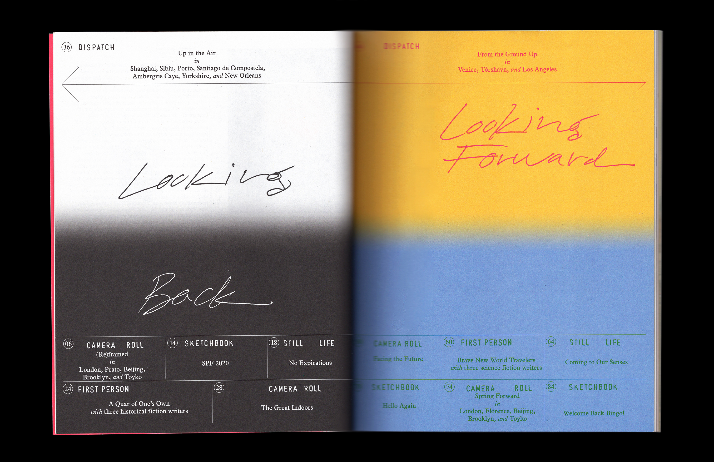
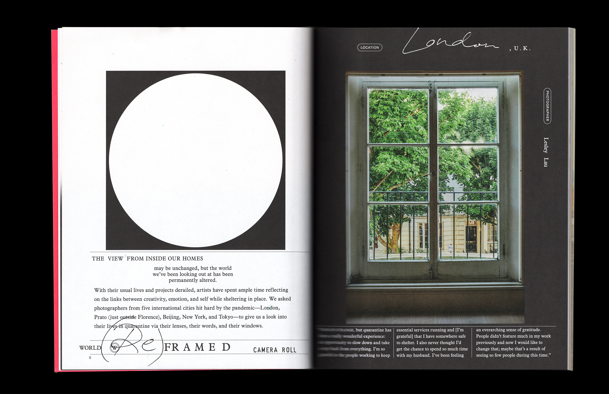
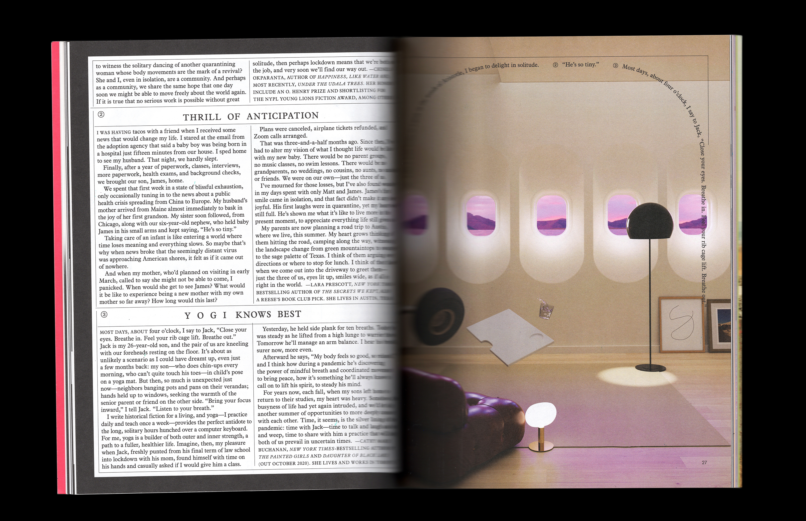
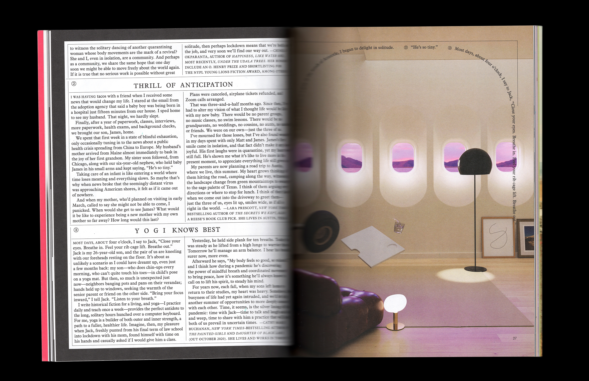

Contents and editor's letter: 
Window views around the world: 

An ode to nonperishables:


Historical fiction authors look back on their lives in quarantine:
 

Documenting the great indoors:

On the toll COVID-19 took on the travel industry:


A breath between sections:
Looking beyond the pandemic:


The people we cherish:


Science fiction writers imagine future utopias:


A trip through the five senses:


An ode to touch:

Springtime walks around the world:


A final moment of levity: